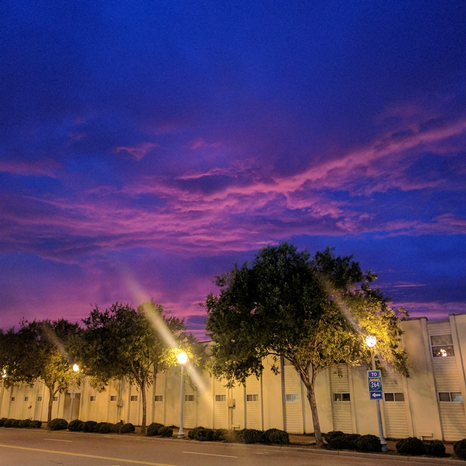

Virginia Beach – the best place for J1 students
Virginia Beach is an independent city located on the southeastern coast of the Commonwealth of Virginia in the United States. As of the 2010 census, the population was 437,994. In 2015, the population was estimated to be 452,745. Although mostly suburban in character, it is the most populous city in Virginia and the 41st most populous city in the nation. Located on the Atlantic Ocean at the mouth of the Chesapeake Bay, Virginia Beach is included in the Hampton Roads metropolitan area. This area, known as "America's First Region", also includes the independent cities of Chesapeake, Hampton, Newport News, Norfolk, Portsmouth, and Suffolk, as well as other smaller cities, counties, and towns of Hampton Roads.

Planet Pizza Virgina Beach
My first job in USA was as a Pizza Maker at Plannet Pizza Virginia beach. A Pizza Maker prepares pizza for customers at restaurants and at stores that offer pizza for pickup and delivery. They also assist with operating all kitchen equipment, maintaining the kitchen, cooking other restaurant menu items and packaging food items. Pizza Makers may also direct less-experienced workers and assist with additional restaurant duties as needed. They work directly under kitchen supervisors or general restaurant managers. The majority of Pizza Makers are employed at restaurants and fast food pizza chains.In order to provide customers with their pizza orders, Pizza Makers performs many different tasks. We analyzed job listings for Pizza Makers in order to identify these core duties and responsibilities. Prepare Food Pizza Makers either prepare or direct the preparation of pizza and other appetizer and side items from the restaurant menu according to standard recipes. They often deal with special customer requests and dietary concerns and must be sure to fill these orders properly. They’re responsible for maintaining standard quality of the food as well as consistency of the food. They must be able to produce large volumes of food in a short amount of time.